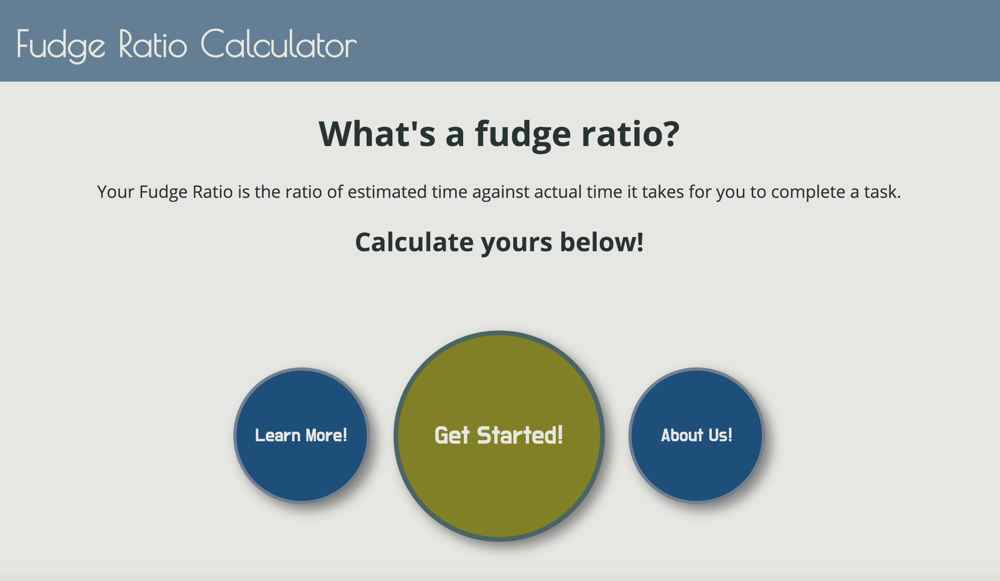
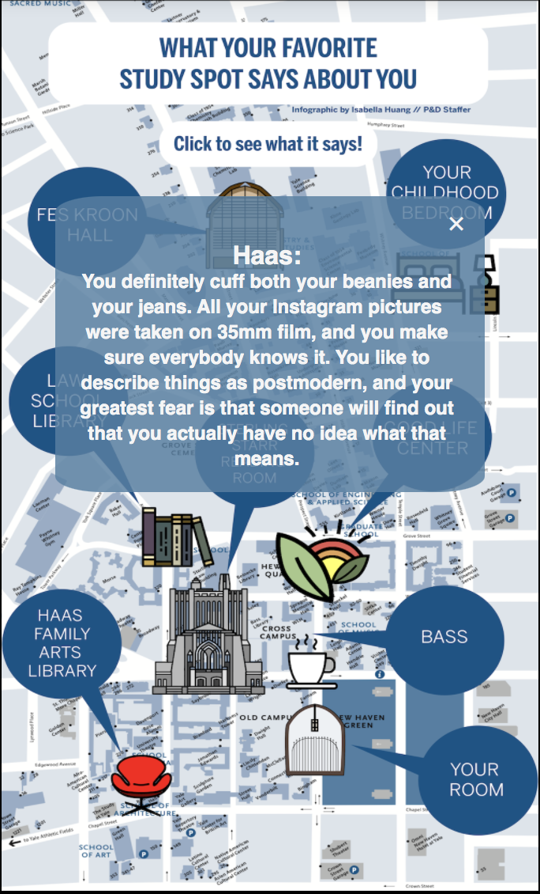

Atari Breakout
For a final project in my Intro to Programming Class, I worked with a partner to replicate the popular game Atari Breakout with Java, using Object-Oriented Programming and linked lists.
Mental Health Gap Web App
In summer 2019, I created an web app mvp for the WHO Mental Health Gap project using JavaScript, Node.js and Vue basics under the direction of Yale Lecturer Dr. Benedict Brown. At the end of the summer, we began the process of converting the web app in to a native Android application using Apache Cordova.
The purpose of the app is to assist primary healthcare workers in rural areas in diagnosing mental health conditions. The video above demonstrates the protocol for diagnosing psychosis, but working off of a previous hard-coded version, I coded the app in such a way that I used a JSON with a specific structure to encode the diagnosis flow chart, so that the web app could be generalized to the diagnosis of any other conditions encoded in a JSON with the same structure.
Yale Daily News Commencement Issue Website
I designed and developed the first ever online special issue of the Yale Daily News with another member of the YDN tech team in the one week time period between the end of classes and commencement day. We used JavaScript (jQuery), HTML, CSS, and Handlebars.js.
Check out the site!

Yale Daily News First Year Issue Website
I worked with a partner to create the Yale Daily News First Year Issue site, which is set to launch later this summer! The website is supposed to aid the class of 2024 in their transition to Yale!

Fudge Ratio Calculator
During the spring 2020 session of Google Software Product Sprint, my team and I created a Fudge Ratio calculator (using Java, JavaScript, HTML and CSS), which seeks to improve user productivity by changing scheduling habits. I worked mainly on the landing and about pages.
Check out the site!
Interactive Map of Yale Study Spots
For the 2020 Yale Daily News First Year Issue, which is set to launch later this summer, I added tooltips to a graphic made by a another memeber of the team to create an interactive way to display an article.
